대기환경기사 (2016-03-06 기출문제)
1과목: 대기오염 개론
1. 복사역전이 가장 발생되기 쉬운 기상조건은?
- 하늘이 흐리고, 바람이 강하며, 습도가 높을 때
- 하늘이 흐리고, 바람이 약하며, 습도가 낮을 때
- 하늘이 맑고, 바람이 강하며, 습도가 높을 때
- 하늘이 맑고, 바람이 약하며, 습도가 낮을 때
(정답률: 80%)

2. 도시 대기오염물질 중, 태양빛을 흡수하는 기체 중의 하나로서 파장 420nm 이상의 가시광선에 의해 광분해되는 물질로 대기 중 체류시간이 약 2~5일 정도인 것은?
- SO2
- NO2
- CO2
- RCHO
(정답률: 81%)
3. 경도풍을 형성하는데 필요한 힘과 가장 거리가 먼 것은?
- 마찰력
- 전향력
- 원심력
- 기압경도력
(정답률: 79%)
4. 광화학스모그와 가장 거리가 먼 것은?
- NO
- CO
- PAN
- HCHO
(정답률: 68%)
5. Dobson unit에 관한 설명에서 ( )에 알맞은 것은?
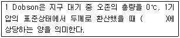
- 0.01mm
- 0.1mm
- 0.1cm
- 1cm
(정답률: 86%)
6. 굴뚝높이가 60m, 대기온도 27℃, 배기가스의 평균온도가 137℃ 일 때, 통풍력을 1.5배 증가시키기 위해서 요구되는 배출가스의 온도는? (단, 굴뚝의 높이는 일정하고, 배기가스와 대기의 비중량은 1.3kg/Nm3이다.)
- 약 230℃
- 약 280℃
- 약 320℃
- 약 370℃
(정답률: 42%)
7. 가우시안형의 대기오염확산방정식을 적용할 때, 지면에 있는 오염원으로부터 바람부는 방향으로 250m 떨어진 연기의 중심축 상 지상오염농도(mg/m3)는? (단, 오염물질의 배출량 6g/sec, 풍속 4.5m/sec, σy는 22.5m, σZ는 12m 이다.)
- 1.26
- 1.36
- 1.57
- 1.83
(정답률: 66%)
8. 대기의 수직구조에 관한 설명으로 가장 적합한 것은?
- 대류권의 높이는 여름보다 겨울이 높다.
- 대류권은 지상으로부터 약 20~30km 정도의 범위를 말한다.
- 구름이 끼고 비가 내리는 등의 기상현상은 대류권에 국한되어 나타나는 현상이다.
- 대류권의 높이는 고위도 지방보다 저위도 지방이 낮다.
(정답률: 70%)
9. 바람을 일으키는 힘 중 전향력에 관한 설명으로 가장 거리가 먼 것은?
- 전향력은 운동의 속력과 방향에 영향을 미친다.
- 북반구에서는 항상 움직이는 물체의 운동방향의 오른쪽 직각방향으로 작용한다.
- 전향력은 극지방에서 최대가 되고 적도지방에서 최소가 된다.
- 전향력의 크기는 위도, 지구자전 각속도, 풍속의 함수로 나타낸다.
(정답률: 70%)
10. 공기역학적직경(aero-dynamic diameter)에 관한 설명으로 가장 옳은 것은?
- 대상 먼지와 침강속도가 동일하며 밀도가 1g/cm3인 구형입자의 직경
- 대상 먼지와 침강속도가 동일하며 밀도가 1kg/cm3인 구형입자의 직경
- 대상 먼지와 밀도 및 침강속도가 동일한 선형입자의 직경
- 대상 먼지와 밀도 및 침강속도가 동일한 구형입자의 직경
(정답률: 82%)
11. A굴뚝의 실제높이가 50m이고, 굴뚝의 반지름은 2m이다. 이 때 배출가스의 분출속도가 18m/s이고, 풍속이 4m/s일 때, 유효굴뚝높이는? (단, Δh = 1.5×(We/u)×D 이용)
- 약 64m
- 약 77m
- 약 98m
- 약 135m
(정답률: 68%)
12. 옥탄가에 관한 설명에서 ( )에 가장 알맞은 것은?
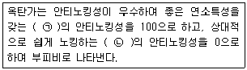
- ㉠ iso-octane, ㉡ n-octane
- ㉠ n-octane, ㉡ iso-octane
- ㉠ iso-octane, ㉡ n-heptane
- ㉠ n-heptane, ㉡ n-octane
(정답률: 79%)
13. Sutton의 확산방정식에서 최대착지농도(Cmax)에 대한 설명으로 옳지 않은 것은?
- 평균풍속에 비례한다.
- 오염물질 배출량에 비례한다.
- 유효굴뚝 높이의 제곱에 반비례한다.
- 수평 및 수직방향 확산계수와 관계가 있다.
(정답률: 69%)
14. 불소화합물의 지표식물로 가장 적합한 것은?
- 콩
- 목화
- 담배
- 옥수수
(정답률: 63%)
15. 역사적인 대기오염사건에 관한 설명으로 옳은 것은?
- 포자리카 사건은 MIC에 의한 피해이다.
- 런던스모그 사건은 복사역전에 형태였다.
- 뮤즈계곡 사건은 PAN이 주된 오염물질로 작용했다.
- 도쿄 오꼬하마 사건은 PCB가 주된 오염물질로 작용했다.
(정답률: 84%)
16. 제조공정과 발생하는 오염물질이 잘못 짝지어 진 것은?
- 화학비료 - NH3
- 제철공업 - HCN
- 가스공업 - H2S
- 석유정제 - HCl
(정답률: 70%)
17. 광화학 반응 시 하루 중 NOx 변화에 대한 설명으로 가장 적합한 것은?
- NO2는 오존의 농도 값이 적을 때 비례적으로 가장 적은 값을 나타낸다.
- NO2는 오전 7~9시 경을 전후로 하여 일중 고농도를 나타낸다.
- 오전 중의 NO의 감소는 오존의 감소와 시간적으로 일치한다.
- 교통량이 많은 이른 아침시간대에 오존농도가 가장 높고, NOx는 오후 2~3시 경이 가장 높다.
(정답률: 64%)
18. 지표면 오존 농도를 증가시키는 원인이 아닌 것은?
- CO
- NOx
- VOCs
- 태양열 에너지
(정답률: 63%)
19. 그림은 어떤 지역의 고도에 따른 대기의 온도변화를 나타낸 것이다. 주로 침강역전에 해당하는 부분은?
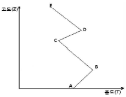
- AB 구간
- BC 구간
- CD 구간
- DE 구간
(정답률: 78%)
20. 분진농도가 120㎍/m3이고, 상대습도가 70%인 상태의 대도시에서 가시거리는? (단, 상수 A = 1.2)
- 5km
- 10km
- 15km
- 20km
(정답률: 75%)
2과목: 연소공학
21. 공기를 사용하여 프로판(C3H8)을 완전연소시킬 때 건조가스 중의 CO2max(%)는?
- 13.76
- 14.76
- 15.25
- 16.85
(정답률: 60%)
22. 폭발성 혼합가스의 연소범위(L)를 구하는 식은? (단, ni : 각 성분 단일의 연소한계(상한 또는 하한), pi : 각 성분 가스의 부피(%))
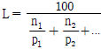
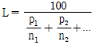
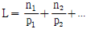
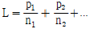
(정답률: 75%)
23. [보기]에서 설명하는 내용으로 가장 적합한 유류연소버너는?
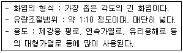
- 유압식
- 회전식
- 고압공기식
- 저압공기식
(정답률: 81%)
24. 연소실 내로 공급되는 연료를 연소시키기 위해 필요한 공기를 공급하는 통풍방식 중 압입통풍에 관한 설명으로 틀린 것은?
- 내압이 정압(+)으로 연소효율이 좋다.
- 송풍기의 고장이 적고 점검 및 보수가 용이하다.
- 역화의 위험성이 없다.
- 흡인통풍방식보다 송풍기의 동력 소모가 적다.
(정답률: 59%)
25. 미분탄 연소방식의 특징으로 틀린 것은?
- 부하변동에 쉽게 적응할 수 있다.
- 비교적 저질탄도 유효하게 사용할 수 있다.
- 연료의 접촉표면이 크므로 작은 공기비로도 연소가 가능하다.
- 고효율이 요구되는 소규모 연소 장치에 적합하다.
(정답률: 71%)
26. 연료 연소 시 공연비(AFR)가 이론량보다 작을 때 나타나는 현상으로 가장 적합한 것은?
- 완전연소로 연소실 내의 열손실이 작아진다.
- 배출가스 중 일산화탄소의 양이 많아진다.
- 연소실벽에 미연탄화물 부착이 줄어든다.
- 연소효율이 증가하여 배출가스의 온도가 불규칙하게 증가 및 감소를 반복한다.
(정답률: 69%)
27. 기체연료의 연소 특성으로 틀린 것은?
- 적은 과잉공기를 사용하여도 완전연소가 가능하다.
- 저장 및 수송이 불편하며 시설비가 많이 소요된다.
- 연소효율이 높고 매연이 발생하지 않는다.
- 부하의 변동범위가 넓어 연소조절이 어렵다.
(정답률: 71%)
28. 기체연료의 연소방식 중 예혼합연소에 관한 설명으로 가장 거리가 먼 것은?
- 연소기 내부에서 연료와 공기의 혼합비가 변하지 않고 균일하게 연소된다.
- 화염길이가 길고, 그을음이 발생하기 쉽다.
- 역화의 위험이 있어 역화방지기를 부착해야 한다.
- 화염온도가 높아 연소부하가 큰 곳에 사용이 가능하다.
(정답률: 74%)
29. 보일러에서 저온부식을 방지하기 위한 방법으로 가장 거리가 먼 것은?
- 과잉공기를 줄여서 연소한다.
- 가스온도를 산노점 이하가 되도록 조절한다.
- 연료를 전처리하여 황함량을 낮춘다.
- 장치표면을 내식재료로 피복한다.
(정답률: 73%)
30. 촉매연소법에 관한 설명으로 가장 거리가 먼 것은?
- 일반적으로 구리, 금, 은, 아연, 카드뮴 등은 촉매의 수명을 탄축시킨다.
- 고농도의 VOCs, 열용량이 높은 물질을 함유한 가스에 효과적으로 적용된다.
- 배출가스 중의 가연성 오염물질을 연소로 내에서 파라듐, 코발트 등의 촉매를 사용하여 주로 연소한다.
- 대부분의 촉매는 800~900℃ 이하에서 촉매역할이 활발하므로 촉매연소에서의 온도상승은 50~100℃ 정도로 유지하는 것이 좋다.
(정답률: 47%)
31. 연소의 종류에 관한 설명으로 틀린 것은?
- 증발연소 : 물질이 직접 기화되면서 연소된다.
- 표면연소 : 휘발분의 함유율이 적은 물질이 연소될 때 표면의 탄소분부터 직접 연소된다.
- 다단연소 : 1단계로 표면물질이 연소되고 중심부로 들어가면서 단계적으로 연소된다.
- 분해연소 : 착화온도에 도달하기 전에 휘발분이 생성되고 그것이 연소되면서 착화연소가 시작된다.
(정답률: 59%)
32. 메탄올 2.0kg을 완전연소 하는데 필요한 이론공기량(Sm3)은?
- 2.5
- 5.0
- 7.5
- 10
(정답률: 54%)
33. 에탄(C2H6)의 고위발열량이 15520 kcal/Sm3일 때, 저위발열량(kcal/Sm3)은? (단, H2O 1Sm3의 증발잠열은 480 kcal/Sm3)
- 15380
- 14560
- 14080
- 13820
(정답률: 71%)
34. 중유의 특성에 대한 설명으로 옳은 것은?
- 인화점은 낮을수록 좋다.
- 회분의 양은 많을수록 좋다.
- 비중이 클수록 발열량은 증가한다.
- 잔류탄소 함량이 많아지면 점도는 높아진다.
(정답률: 53%)
35. 탄소 85%, 수소 10%, 황 5%인 중유를 공기비 1.2로 연소할 때 건조배출가스 중 SO2의 부피비(%)는?
- 0.29
- 1.46
- 2.60
- 3.72
(정답률: 52%)
36. 연료 및 연소에 관한 설명으로 틀린 것은?
- 휘발유, 등유, 경유, 중유 중 비점이 가장 높은 연료는 휘발유이다.
- 연소는 고속의 발열반응이며 일반적으로 빛을 수반한다.
- 탄소성분이 많은 중질유 등의 연소에서는 초기에는 증발연소를 하고, 그 열에 의해 연료성분이 분해되면서 연소한다.
- 코크스나 목탄 등의 고체연료는 빨간 불꽃을 내면서 연소되는 표면연소이다.
(정답률: 68%)
37. 액화천연가스의 대부분을 차지하는 구성성분은?
- CH4
- C2H6
- C3H8
- C4H10
(정답률: 75%)
38. 휘발유의 안티노킹제(anti-knocking agent)로 옥탄가를 증진시키는 물질로 최근에 널리 사용되는 물질은?
- Cenox
- Cetane
- TEL(tetraethyl lead)
- MTBE(methyl tert-butyl ether)
(정답률: 63%)
39. 석탄의 탄화도가 증가하면 감소하는 것은?
- 비열
- 발열량
- 고정탄소
- 착화온도
(정답률: 71%)
40. 액체연료를 효율적으로 연소시키기 위해서는 연료를 미립화하여야 한다. 이때 미립화 특성을 결정하는 인자로 틀린 것은?
- 분무유량
- 분무입경
- 분무점도
- 분무의 도달 거리
(정답률: 51%)
3과목: 대기오염 방지기술
41. 싸이클론(Cyclone)의 조업 변수 중 집진효율을 결정하는 가장 중요한 변수는?
- 유입가스의 속도
- 사이클론의 내부 높이
- 유입가스의 먼지 농도
- 사이클론에서의 압력손실
(정답률: 61%)
42. 축류식 원심력 집진장치 중 반전형에 관한 설명으로 틀린 것은?
- 입구가스의 속도가 50m/sec 전 후이다.
- 접선유입식에 비해 압력손실이 적은 편이다.
- 가스의 균일한 분배가 용이한 이점이 있다.
- 함진가스 입구의 안내익에 따라 집진효율이 달라진다.
(정답률: 62%)
43. 전기집진장치의 각종 장해에 따른 대책으로 가장 거리가 먼 것은?
- 미분탄 연소 등에 따라 역전리 현상이 발생할 때에는 집진극의 타격을 강하게 하거나, 빈도수를 늘린다.
- 재비산이 발생할 때에는 처리가스의 속도를 낮추어 준다.
- 먼지의 비저항이 비정상적으로 높아 2차전류가 현저히 떨어질 때에는 조습용 스프레이의 수량을 줄인다.
- 먼지의 비저항이 비정상적으로 높아 2차전류가 현저히 떨어질 때에는 스파크 횟수를 늘린다.
(정답률: 71%)
44. 총 집진효율 93%를 얻기 위해 40% 효율을 가진 1차 전처리설비를 설치시 2차 처리장치의 효율(%)은?
- 58.3
- 68.3
- 78.3
- 88.3
(정답률: 61%)
45. Cl2 농도가 0.5%인 배출가스 10000 Sm3/hr를 Ca(OH)2 현탄액으로 세정처리 시 필요한 Ca(OH)2의 양은?
- 약 147.4 kg/hr
- 약 155.3 kg/hr
- 약 160.3 kg/hr
- 약 165.2 kg/hr
(정답률: 35%)
46. 유해가스를 촉매연소법으로 처리할 때 촉매의 수명을 단축시키거나 효율을 감소시킬 수 있는 물질과 거리가 먼 것은?
- Fe
- Si
- Pd
- P
(정답률: 65%)
47. 헨리법칙을 이용하여 유도된 총괄물질이동계수와 개별물질이동계수와의 관계를 나타낸 식은? (단, KG : 기상총괄물질이동계수, kl : 액상물질이동계수, kg : 기상물질이동계수, H : 헨리정수)
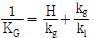
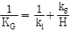
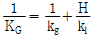
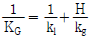
(정답률: 59%)
48. 활성탄 흡착법을 이용하여 악취 제거 시 효과가 거의 없는 물질은?
- 페놀(phenol)
- 스타이렌(styrene)
- 에틸머캡탄(ethyl mercaptan)
- 암모니아(ammonia)
(정답률: 60%)
49. 전기집진장치의 먼지 제거효율을 95%에서 99%로 증가시키고자 할 때, 집진극의 면적은 길이방향으로 몇 배 증가하여야 하는가? (단, 나머지 조건은 일정하다고 가정함)
- 1.24배 증가
- 1.54배 증가
- 1.84배 증가
- 2.14배 증가
(정답률: 54%)
50. 직경 100㎛의 먼지가 높이 8m되는 위치에서 바람이 5m/sec 수평으로 불 때 이 먼지의 전방 낙하지점은? (단, 동종의 10㎛ 먼지의 낙하속도는 0.6cm/sec)
- 67m
- 77m
- 88m
- 99m
(정답률: 32%)
51. 불화수소를 함유한 용해성이 높은 가스를 충전탑에서 흡수처리 할 때 기상총괄단위수(NOG)를 10, 기상총괄이동단위높이(HOG)를 0.5m로 할 때 충전탑의 높이(m)는?
- 5
- 5.5
- 10
- 10.5
(정답률: 60%)
52. 여과 집진장치에 관한 설명으로 틀린 것은?
- 여과자루 모양에 따라 원통형, 평판형, 봉투형으로 분류되며, 주로 원통형을 사용한다.
- 여과자루 길이(L) / 여과자루 직경(D) ≒ 50 이상으로 많이 설계하고, 여과자루 간의 최소간격은 1.5m 이상이 되어야 한다.
- 간헐식의 경우는 먼지의 재비산이 적고 여포수명이 연속식에 비해 길다.
- 간헐식 중 진동형은 접착성 먼지집진에는 사용할 수 없다.
(정답률: 67%)
53. 충전탑 내 상부에서 흐르는 액체는 충전제 전체를 적시면서 고르게 분포하는 것이 가장 좋다. 균일한 액의 분포를 위하여 가장 이상적인 편류현상의 D/d는? (단, 충전탑의 지름: D, 충전제의 지름: d)
- 1~2 정도
- 8~10 정도
- 40~70 정도
- 50~100 정도
(정답률: 65%)
54. 여과집진장치의 탈진방식에 관한 설명 중 틀린 것은?
- 연속식에는 역제트기류 분사형과 충격제트기류 분사형 등이 있다.
- 연속식은 포집과 탈진이 동시에 이루어지므로 압력손실이 거의 일정하고 고농도, 대용량의 가스를 처리할 수 있다.
- 간헐식은 먼지의 재비산이 적고, 높은 집진율을 얻을 수 있으며, 여포의 수명은 연속식에 비해 길다.
- 충격제트기류 분사형은 여과자루에 상하로 이동하는 불로워에 몇 개의 슬롯을 설치하고 여기에 고속제트기류를 주입하여 여과자루를 위, 아래로 이동하면서 탈진하는 방식으로 내면여과이다.
(정답률: 48%)
55. 원심형 송풍기의 성능에 대한 설명으로 옳은 것은?
- 송풍기의 풍량은 회전수의 제곱에 비례한다.
- 송풍기의 풍압은 회전수의 제곱에 비례한다.
- 송풍기의 크기는 회전수의 제곱에 비례한다.
- 송풍기의 동력은 회전수의 제곱에 비례한다.
(정답률: 61%)
56. 악취제거 방법에 관한 설명으로 틀린 것은?
- 물리흡착법이 주로 이용된다.
- 희석 방법은 악취를 대량의 공기로 희석시켜 감지되지 않도록 하는 염가의 방법이다.
- 백금이나 금속 산화물 등의 산화 촉매를 이용하여 260~450℃ 정도의 온도에서 산화 처리할 수 있다.
- 유기성의 냄새 유발 물질을 태워서 산화시키면 불완전 연소가 있더라도 냄새의 강도를 줄일 수 있다.
(정답률: 46%)
57. 흡착과정에 대한 설명 중 틀린 것은?
- 파과곡선의 형태는 흡착탑의 경우에 따라서 비교적 기울기가 큰 것이 바람직하다.
- 포화점(saturation point)에서는 주어진 온도와 압력조건에서 흡착제가 가장 많은 양의 흡착질을 흡착하는 과정이다.
- 실제의 흡착은 비정상상태에서 진행되므로 흡착의 초기에는 흡착이 천천히 진행되다가 어느 정도 흡착이 진행되면 빠르게 흡착이 이루어진다.
- 흡착제층 전체가 포화되어 배출가스 중에 오염가스 일부가 남게 되는 점을 파과점(break point)이라 하고, 이 점 이후부터는 오염가스의 농도가 급격히 증가한다.
(정답률: 62%)
58. 배연탈황법 중 석회석주입법에 관한 설명으로 틀린 것은?
- 석회석 재생뿐만 아니라 부대설비가 많이 소요된다.
- 배출가스의 온도가 떨어지지 않는 장점이 있다.
- 소규모 보일러나 노후된 보일러에 많이 사용되어 왔다.
- 연소로 내에서 짧은 접촉시간을 가지며, 아황산가스가 석회분말의 표면 안으로 침투가 어렵다.
(정답률: 55%)
59. 유체의 점도를 나타내는 단위 표현으로 틀린 것은?
- poise
- liter·atm
- Pa·s
- g/(cm ·s)
(정답률: 68%)
60. 배출가스 중의 NOx 제거법에 관한 설명 중 틀린 것은?
- 비선택적인 촉매환원에서는 NOx뿐만 아니라, O2까지 소비된다.
- 선택적 촉매환원법은 TiO2와 V2O5를 혼합하여 제조한 촉매에 NH3, H2, CO, H2S등의 환원가스를 작용시켜 NOx를 N2로 환원시키는 방법이다.
- 선택적 촉매환원법의 최적온도 범위는 700~850℃ 정도이며, 보통 50% 정도의 NOx를 저감시킬 수 있다.
- 배출가스 중의 NOx제거는 연소조절에 의한 제어법보다 더 높은 NOx 제거효율이 요구되는 경우나 연소방식을 적용할 수 없는 경우에 사용된다.
(정답률: 66%)
4과목: 대기오염 공정시험기준(방법)
61. 다음의 조건을 이용하여 가스크로마토그래프법에서 계산된 보유시간은?
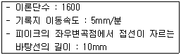
- 5분
- 10분
- 15분
- 20분
(정답률: 45%)
62. 대기오염공정시험기준상 굴뚝 배출가스 중의 알데히드 및 케톤화합물의 분석방법으로 가장 적절한 것은?
- 중화법
- 페놀디슬폰산법
- 크로모트로핀산법
- 4-아미노 안티피린법
(정답률: 57%)
63. 굴뚝 등에서 배출되는 가스 중의 산소측정을 위한 자기풍분석계의 구성인자와 가장 거리가 먼 것은?
- 담벨
- 자극
- 측정 셀
- 열선소자
(정답률: 60%)
64. 굴뚝 배출가스 중의 이황화탄소 분석방법에 관한 설명 중 ( )에 알맞은 것은?
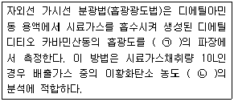
- ㉠ 340 nm, ㉡ 0.⑤~1 V/Vppm
- ㉠ 340 nm, ㉡ 3~60 V/Vppm
- ㉠ 435 nm, ㉡ 0.⑤~1 V/Vppm
- ㉠ 435 nm, ㉡ 3~60 V/Vppm
(정답률: 59%)
65. A 보일러 굴뚝의 배출가스 온도 280℃, 압력 760mmHg, 피토우관에 의한 동압 측정치는 0.552 mmHg이었다. 이 때 굴뚝 배출가스 평균유속(m/s)은? (단, 굴뚝 내 습배출가스의 밀도는 1.3 kg/Sm3, 피토우관 계수는 1 이다.)
- 약 9.6
- 약 12.3
- 약 14.6
- 약 15.1
(정답률: 36%)
66. 굴뚝 배출가스 내 산소측정 분석계 중 측정셀, 자극보조 가스용 조리개, 검출소자, 증폭기 등으로 구성되는 것은?
- 자기풍 분석계
- 담벨형 자기력 분석계
- 압력 검출형 자기력 분석계
- 전기화학식 질코니아 분석계
(정답률: 52%)
67. 굴뚝 배출가스 중의 벤젠을 흡광광도법으로 측정하려고 한다. 다음 설명 중 틀린 것은?(관련 규정 개정전 문제로 여기서는 기존 정답인 2번을 누르면 정답 처리됩니다. 자세한 내용은 해설을 참고하세요.)
- 벤젠을 질산암모늄을 가한 황산에 흡수시켜 니트로화 한다.
- 시료중에 톨루엔이나 크실렌이 존재하면 측정치가 낮아진다.
- 자색액의 흡광도로부터 벤젠을 정량하는 방법이다.
- 시료중에 모노클로로벤젠이나 에틸벤젠이 존재하면 측정치가 높아진다.
(정답률: 64%)
68. 원형굴뚝의 단면적이 13~15m2인 경우 배출되는 먼지 측정을 위한 반경구분수(㉠)와 측정점수(㉡)는?
- ㉠ 2, ㉡ 8
- ㉠ 3, ㉡ 12
- ㉠ 4, ㉡ 16
- ㉠ 5, ㉡ 20
(정답률: 57%)
69. 환경대기 중 금속화합물을 원자흡수분광광도법(원자흡광광도법)으로 분석하고자 할 때 화학적 간섭에 관한 사항으로 거리가 먼 것은?
- 아연 분석 시 213.8nm 측정파장을 이용할 경우 불꽃에 의한 흡수 때문에 바탕선(baseline)이 높아지는 경우가 있다.
- 니켈 분석 시 다량의 탄소가 포함된 시료의 경우, 시료를 채취한 여과지를 적당한 크기로 잘라서 전기로 안에서 1⑤~110℃에서 30분 이상 건조한 후 전처리 조작을 행한다.
- 철 분석 시 규소(Si)를 다량 포함하고 있을 때는 0.2% 염화칼슘(CaCl2) 용액을 첨가하여 분석하고, 유기산(특히 시트르산)이 다량 포함되어 있을 때는 0.5% 인산을 가하여 간섭을 줄일 수 있다.
- 크롬 분석 시 아세틸렌-공기 불꽃에서는 철, 니켈 등에 의한 방해를 받으므로 황산나트륨, 황산칼륨 또는 이플루오린화수소암모늄을 1% 정도 가하여 분석한다.
(정답률: 49%)
70. 비산먼지의 농도를 구하기 위해 측정한 조건 및 결과가 다음과 같을 때 비산먼지의 농도(mg/m3)는?
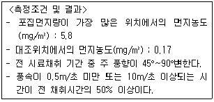
- 5.6
- 6.8
- 8.1
- 10.1
(정답률: 57%)
71. 비분산 적외선 분석법에서 사용하는 주요 용어의 정의로 틀린 것은?
- 비교가스 : 시료셀에서 적외선 흡수를 측정하는 경우 대조가스로 사용하는 것으로 적외선을 흡수하지 않는 가스
- 스팬 드리프트(Span Drift) : 계기의 눈금스팬에 대응하는 지시치의 일정 기간내의 변동
- 스팬가스(Span Gas) : 분석계의 최저 눈금값을 교정하기 위하여 사용하는 가스
- 정필터형 : 측정성분이 흡수되는 적외선을 그 흡수파장에서 측정하는 방식
(정답률: 65%)
72. 원자흡광 분석장치에 관한 설명으로 가장 거리가 먼 것은?
- 램프점등장치 중 직류점등 방식은 광원의 빛 자체가 변조되어 있기 때문에 빛의 단속기(chopper)는 필요하지 않다.
- 원자흡광분석용 광원은 원자흡광 스펙트럼선의 선폭보다 좁은 선폭을 갖고 휘도가 높은 스펙트럼을 방사하는 중공음극램프가 많이 사용된다.
- 시료를 원자화하는 일반적인 방법은 용액상태로 만든 시료를 불꽃 중에 분무하는 방법이며 플라즈마 제트불꽃 또는 방전을 이용하는 방법도 있다.
- 전분무 버너는 가연가스와 조연가스가 버너 선단부에서 혼합되어 불꽃을 형성하고 이 때 빨아올린 시료용액은 모든 이 불꽃 속으로 들어가게 된다.
(정답률: 48%)
73. 이온크로마토그래프법에 관한 설명으로 옳지 않은 것은?
- 공급전원은 전압변동 5% 이하, 주파수변동 10% 이하로 변동이 적어야 한다.
- 일반적으로 강수물, 대기먼지, 하천수 중의 이온성분을 정량, 정성 분석하는 데 이용한다.
- 가시선 흡수 검출기(VIS 검출기)는 전이금속 성분의 발색반응을 이용하는 경우에 사용된다.
- 서프렛서는 관형과 이온교환막형이 있으며, 관형은 음이온에는 스티롤계 강산형(H+)수지가, 양이온에는 스티롤계 강염기형(OH-)의 수지가 충진된 것을 사용한다.
(정답률: 54%)
74. 가스크로마토그래피(Gas Chromatography)분석에 사용되는 검출기와 거리가 먼 것은?
- Thermal Conductivity Detector
- Electronic Conductivity Detector
- Electron Capture Detector
- Flame Photometric Detector
(정답률: 54%)
75. 환경대기 중의 시료채취에 관한 일반적인 주의사항으로 거리가 먼 것은?
- 악취물질의 채취는 되도록 짧은 시간 내에 끝내고 입자상 물질중의 금속성분이나 발암성 물질 등은 되도록 장시간 채취한다.
- 시료채취 유량은 각 항에서 규정하는 범위 내에서는 되도록 많이 채취하는 것을 원칙으로 한다.
- 바람이나 눈, 비로부터 보호하기 위하여 측정기기는 실내에 설치하고 벽과의 반응, 흡착, 흡수 등에 의한 영향을 최소한도로 줄일 수 있는 재질과 방법을 선택한다.
- 입자상 물질을 채취할 경우에는 채취관 벽에 분진이 부착 또는 퇴적하는 것을 피하고 특히 채취관은 수평방향으로 연결할 경우에는 되도록 관의 길이를 길게 하고 곡률반경은 작게 한다.
(정답률: 56%)
76. 대기오염공정시험기준의 화학분석 일반사항에서 시험의 기재 및 용어에 관한 설명으로 거리가 먼 것은?
- 액체성분의 양을"정확히 취한다"함은 메스피펫, 메스실린더 정도의 정확도를 갖는 용량계 사용을 말한다.
- 시험조작 중"즉시"란 30초 이내에 표시된 조작을 하는 것을 말한다.
- "항량이 될 때 까지 건조한다"라 함은 따로 규정이 없는 한 보통의 건조방법으로 1시간 더 건조 시, 전후 무게의 차가 매 g 당 0.3mg이하 일 때를 말한다.
- "정확히 단다"라 함은 규정한 량의 검체를 취하여 분석용 저울로 0.1mg까지 다는 것을 뜻한다.
(정답률: 59%)
77. 전기 아크로를 사용하는 철강공장에서 외부로 비산 배출되는 먼지를 불투명도법으로 측정하는 방법에 관한 설명으로 옳은 것은?
- 비탁도는 최소 1도의 단위로 측정값을 기록한다.
- 시료의 채취시간은 60초 간격으로 비탁도를 측정한다.
- 측정된 비탁도에 100%를 곱한 값을 불투명도 값으로 한다.
- 측정 시 태양은 측정자의 좌측 또는 우측에 있어야 하고, 측정위치는 발생원으로부터 멀어도 1 km 이내이어야 한다.
(정답률: 44%)
78. 굴뚝배출가스 중 아황산가스를 연속적으로 자동측정하는 방법에서 사용되는 용어의 의미로 거리가 먼 것은?(오류 신고가 접수된 문제입니다. 반드시 정답과 해설을 확인하시기 바랍니다.)
- 90% 교정가스를 스팬가스라고 한다.
- 제로가스는 표준시험기관에 의해 아황산가스 농도가 0.1ppm 미만으로 보증된 참가스를 말한다.
- 교정가스는 공인기관의 보정치가 제시되어 있는 표준가스로 연속자동측정기 최대 눈금치의 약 50%와 90%에 해당하는 농도를 갖는다.
- 보정이란 보다 참에 가까운 값을 구하기 위하여 판독값 또는 계산값에 어떤 값을 가감하는 것 또는 그 값을 말한다.
(정답률: 44%)
79. 굴뚝배출가스 중 먼지측정을 위한 시료채취방법에 관한 사항으로 옳지 않은 것은?(2021년 09월 개정된 규정 적용됨)
- 한 채취점에서의 채취시간을 최소 30초 이상으로 하고 모든 채취점에서 채취시간을 동일하게 한다.
- 동압은 원칙적으로 0.1 mmH2O의 단위까지 읽고, 이 때, 피토관의 배출가스 흐름방향에 대한 편차를 10°이하가 되어야 한다.
- 등속흡인식에 의해서 등속계수를 구하고 그 값이 90~110% 범위 내에 들지 않는 경우에는 다시 시료채취를 행한다.
- 피토관을 측정공에서 굴뚝내의 측정점 까지 삽입하여 전압공을 배출가스 흐름방향에 바로 직면시켜 압력계에 의하여 동압을 측정한다.
(정답률: 40%)
80. 연료용 유류 중의 황함유량 측정방법 중 방사선식 여기법에 관한 설명으로 옳지 않은 것은?
- 여기법 분석계의 전원 스위치를 넣고, 1시간 이상 안정화 시킨다.
- 시료에 방사선을 조사하고 여기된 황의 원자에서 발생하는 γ선의 강도를 측정한다.
- 표준 시료는 디부틸디술파이드를 이용하여 조제한 것으로 황함유량이 확인된 것을 사용한다.
- 시료를 충분히 교반한 후 준비된 시료 셀에 기포가 들어가지 않도록 주의하여 액층의 두께가 5~20 mm가 되도록 시료를 넣는다.
(정답률: 55%)
5과목: 대기환경관계법규
81. 대기환경보전법상 ( )에 알맞은 기간은?
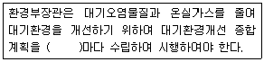
- 3년
- 5년
- 10년
- 20년
(정답률: 57%)
82. 대기환경보전법규상 대기오염방지시설에 해당하지 않는 것은? (단, 기타사항 제외)
- 음파집진시설
- 화학적침강시설
- 미생물을 이용한 처리시설
- 촉매반응을 이용하는 시설
(정답률: 45%)
83. 대기환경보전법령상 대기오염경보단계 중'경보발령'의 경우 조치하여야 하는 사항과 가장 거리가 먼 것은?
- 주민의 실외활동 제한 요청
- 자동차 사용의 제한
- 사업장의 연료사용량 감축 권고
- 사업장의 조업시간 단축 명령
(정답률: 54%)
84. 대기환경보전법령상 대기오염물질발생량의 합계가 연간 25톤인 사업장에 해당하는 것은? (단, 기타사항 제외)
- 1종 사업장
- 2종 사업장
- 3종 사업장
- 4종 사업장
(정답률: 61%)
85. 악취방지법규상 지정악취물질이 아닌 것은?
- 황화수소
- 이산화황
- 아세트알데하이드
- 다이메틸다이설파이드
(정답률: 36%)
86. 대기환경보전법규상 기관출력이 130kW 초과인 선박의 질소산화물 배출기준(g/kWh)은? (단, 정격 기관속도 n(크랭크샤프트의 분당속도)이 130rpm 미만이며 2010년 12월 31일 이전에 건조한 선박의 경우)
- 9.0×n(-2.0) 이하
- 45.0×n(-0.2) 이하
- 9.8 이하
- 17 이하
(정답률: 39%)
87. 대기환경보전법령상 초과부과금 부과대상 오염물질이 아닌 것은?(관련 규정 개정전 문제로 여기서는 기존 정답인 4번을 누르면 정답 처리됩니다. 자세한 내용은 해설을 참고하세요.)
- 먼지
- 불소화합물
- 시안화수소
- 질소산화물
(정답률: 58%)
88. 대기환경보전법령상 과태료 부과기준으로 옳지 않은 것은?
- 위반행위의 횟수에 따른 과태료의 부과기준은 최근 1년간 같은 위반행위로 과태료 부과처분을 받은 경우에 적용한다.
- 부과권자는 과태료 금액의 2분의 1의 범위에서 그 금액을 줄일 수 있으나, 과태료를 체납하고 있는 위반행위자에 대해서는 그러하지 아니하다.
- 개별기준으로 환경기술인 등의 교육을 받게 하지 않은 경우 1차 위반 시 과태료 금액은 60만원이다.
- 개별기준으로 비산먼지 발생사업장으로 신고하지 아니한 경우 1차 위반 시 과태료 금액은 200만원이다.
(정답률: 31%)
89. 환경기술인 등의 교육에 관한 설명으로 옳지 않은 것은?
- 교육과정의 교육기간은 4일 이내로 한다.
- 환경보전협회는 환경기술인의 교육기관이다.
- 신규교육은 환경기술인으로 임명된 날부터 30일 이내에 교육을 이수하여야 한다.
- 환경부장관은 교육계획을 매년 1월 31일까지 시·도지사에게 통보하여야 한다.
(정답률: 50%)
90. 대기환경보전법령상 오염물질의 초과부과금 산정 시 위반횟수별 부과계수 산출방법이다. ( )에 알맞은 것은?
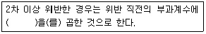
- 100분의 100
- 100분의 1⑤
- 100분의 110
- 100분의 120
(정답률: 57%)
91. 대기환경보전법령상 배출부과금 산정 시 자동측정사업장의 경우 배출허용기준을 초과하는 위반횟수의 기준은?
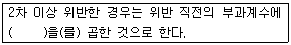
- 1시간 평균치가 배출허용기준을 초과하는 횟수
- 30분 평균치가 배출허용기준을 초과하는 횟수
- 15분 평균치가 배출허용기준을 초과하는 횟수
- 5분 평균치가 배출허용기준을 초과하는 횟수
(정답률: 54%)
92. 대기환경보전법규상 고체연료 사용시설 설치기준 중 석탄사용시설기준이다. ( )에 알맞은 값은?
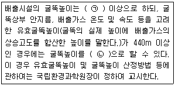
- ㉠ 50m, ㉡ 50m 미만
- ㉠ 50m, ㉡ 25m 이상 50m 미만
- ㉠ 100m, ㉡ 25m 이상 100m 미만
- ㉠ 100m, ㉡ 60m 이상 100m 미만
(정답률: 53%)
93. 배출부과금 부과 시 고려사항으로 가장 거리가 먼 것은?
- 대기오염물질의 농도
- 배출허용기준 초과여부
- 대기오염물질의 배출기간
- 배출되는 대기오염물질의 종류
(정답률: 40%)
94. 대기환경보전법규상 대기오염 경보단계 중"경보"해제기준에서 ( )에 알맞은 것은?
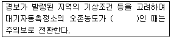
- 0.1ppm 이상 0.3ppm 미만
- 0.1ppm 이상 0.5ppm 미만
- 0.12ppm 이상 0.3ppm 미만
- 0.12ppm 이상 0.5ppm 미만
(정답률: 51%)
95. 대기환경보전법령상 인증을 면제할 수 있는 자동차에 해당되는 것은?
- 항공기 지상 조업용 자동차
- 국가대표 선수용 자동차로서 문화체육관광부장관의 확인을 받은 자동차
- 여행자 등이 다시 반출할 것을 조건으로 일시 반입하는 자동차
- 주한 외국군인의 가족이 사용하기 위하여 반입하는 자동차
(정답률: 53%)
96. 대기환경보전법에서 사용하는 용어의 정의로 틀린 것은?
- 매연: 연소할 때 발생하는 유리탄소가 주가되는 미세한 입자상 물질을 말한다.
- 가스: 물질이 연소, 합성, 분해될 때 발생하거나 물리적 성질로 인하여 발생하는 기체상 물질을 말한다.
- 기후, 생태계변화 유발물질: 지구온난화 등으로 생태계의 변화를 가져올 수 있는 기체상 또는 입자상 물질로서 대통령령이 정하는 것을 말한다.
- 온실가스: 적외선 복사열을 흡수하거나 다시 방출하여 온실효과를 유발하는 대기 중의 가스상태 물질로서 이산화탄소, 메탄, 아산화질소, 수소불화탄소, 과불화탄소, 육불화황을 말한다.
(정답률: 56%)
97. 다중이용시설 등의 실내공기질관리법규상 신축공동주택의 실내공기질 권고 기준으로 옳지 않은 것은?
- 자일렌 : 600 ㎍/m3 이하
- 톨루엔 : 1000 ㎍/m3 이하
- 스티렌 : 300 ㎍/m3 이하
- 에틸벤젠 : 360 ㎍/m3 이하
(정답률: 56%)
98. 대기환경보전법상 대기오염 경보가 발령된 지역에서 자동차 운행제한이나 사업장 조업단축의 명령을 정당한 사유 없이 위반한 자에 대한 벌칙기준으로 옳은 것은?
- 1년 이하의 징역이나 1천만원 이하의 벌금에 처한다.
- 1년 이하의 징역이나 500만원 이하의 벌금에 처한다.
- 500만원 이하의 벌금에 처한다.
- 300만원 이하의 벌금에 처한다.
(정답률: 31%)
99. 대기환경보전법상 배출시설의 설치허가 및 신고 등에 대한 설명으로 틀린것은?
- 신고한 사항을 변경하고자 하는 경우에는 변경신고를 하여야 한다.
- 허가받은 사항을 변경하고자 하는 경우에는 사안에 따라 변경허가를 받거나, 변경신고를 하여야 한다.
- 대기오염물질 배출시설을 설치완료한 자는 배출시설의 가동을 시작하기 전에 배출시설 허가를 받거나 신고를 하여야 한다.
- 특정대기유해물질로 인하여 주민의 건강과 재산에 심각한 위해를 끼칠 우려가 있다고 인정되면 대통령령으로 정하는 바에 따라 배출시설 설치를 제한할 수 있다.
(정답률: 39%)
100. 환경부령이 정하는 자동차 연료의 제조기준에 적합하지 아니하게 제조된 유류제품 등을 자동차연료로 사용한 자에 대한 벌칙기준으로 적절한 것은?
- 200만원 이하의 과태료
- 300만원 이하의 벌금
- 1년 이하의 징역 또는 1천만원 이하의 벌금
- 2년 이하의 징역 또는 3천만원 이하의 벌금
(정답률: 35%)